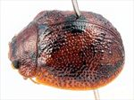
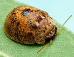
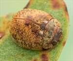
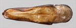
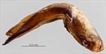
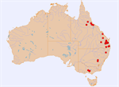
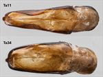

Click on images to enlarge

Female, Tanduringie, S.E. Queensland [1997-403b]

Male, Warwick, S.E. Queensland [2024-020a]

Female, Harvey Range, North Queensland [2025-169]

Aedeagus, dorsal view (Gallangowan, SE Qld, 2006-102a)

Aedeagus, lateral view (Gallangowan, SE Qld, 2006-102a)

Distribution

Dorsal surface of aedeagus of Ta11 and Ta34
Ta11
Name
Trachymela sp. Ta11
Reference specimen
2004-029, Bouloumba Creek, S.E. Queensland
Adult Description
Length: ♂ 4.8–5.8 mm (n=15), ♀ 4.4–6.0 mm (n=34).
Colouration:
Head: mid-brown, often with a pair of darker-brown markings behind fronto-clypeal suture, one on each side between eye and central suture; mandibles dark-brown or black-tipped; antennomeres straw-brown, distal two segments rarely tinged darker-brown.
Pronotum: brown, concolorous with head, sometimes with small darker-brown patches situated one on each side just inside level of humeral callus.
Scutellum: brown, concolorous with or fractionally darker than pronotum, usually with a slightly darker border.
Elytra: brown, concolorous with pronotum, with a black or dark-brown quadrate area straddling the elytral summit and sometimes extending to the elevated ridges towards the area around scutellum; other dark-brown and diffuse patches present in apical half of disc and (more rarely) elsewhere, the dark shade in these areas including the verrucae and surrounding elytral surface; punctures similar to or rarely a slightly darker shade than interstices; humeral callus concolorous with surrounding area.
Venter & Legs: mid-brown with metaventrite usually darker in shade, at least laterally; inner surface of elytral epipleura brown.
Cuticular Wax: light brown, lacking from smooth patch around elytral summit; wax may be evenly distributed, sometimes quite thick, or more concentrated in depressions of elytral surface; small grayish patch sometimes present at base of elytron adjacent to scutellum, rarely extending posteriorly to around elytral summit.
Morphology:
Head: punctures moderately large (pd ≈ 1.5–2×ef) and relatively evenly and densely distributed; antennae short, particularly in females (AL/BL: ♂ 41–46%, ♀ 33–35%), filiform.
Pronotum: almost evenly curved transversely, foveal depression absent with epidermis often slightly elevated in a small pustule behind eyes; discal area with surface somewhat uneven and puncturation clearly impressed, evenly distributed and relatively dense (spacing ≈ 1.5–2.5pd), becoming much more coarse at lateral margins; front margins join lateral margins in a smoothly rounded right-angle, with lateral margin curving smoothly and very gradually towards rear margin, broadest just in front of posterolateral angle.
Scutellum: unpunctured or sparsely and finely punctured, surface smooth to slightly wrinkled.
Elytra: surface evenly to very slightly unevenly curved with a slightly elevated and relatively smooth (and black) quadrate area around elytral summit where punctures are less deeply impressed than elsewhere; elsewhere punctures distinct and moderately large, closely spaced with very convex interstices, evenly distributed over anterior two-thirds of surface, surface more granular in posterior third, with much smaller punctures scattered sparsely on interstices, interstices sometimes forming thin transverse ridges; elytral surface very vaguely depressed just anterior to centre; verrucae small and quite inconspicuous, present primarily in posterior half, not aligned transversely or longitudinally and most with a small central puncture; surface continuous under humeral callus; vertical extension of epipleura considerable (HCE/PW = 0.35–0.42).
Venter: prosternal process almost parallel, open or lightly closed anteriorly, at most a very sparse scatter of setae present along prosternal process and on mesoventrite; a single long seta present on each anterior, median, and posterior trochanter; front edge of metaventrite beveled; inner edge of posterior of epipleura lacking setae.
Male Genitalia (Aedeagus):
Dimensions: moderately long (LPE/BL = (30.5)35–40%).
Dorsal view: widest near junction of basal and central sections (WPE/LPE = 0.26–0.31), then narrowing gradually and evenly towards close to apex from where sides converge suddenly towards apex, tip triangular and small; strongly sclerotized sides extend inwards in a smooth curve (but do not meet) a little behind ostium, rest of dorsal surface more lightly sclerotized; dorso-median channel thin but clearly defined; ostial processes extend forward to a little behind level of tip; ostial opening small and quadrate.
Lateral view: prominently angled at about 90° near centre, linear on both sides of inflection, tip very slightly deflexed.
Immature Stages
Unknown.
Similar species
Ta34: There is no reliable way to distinguish individuals of this species from those of Ta11 without male genitalic characters. Ta34 seems more variable than Ta11, with many individuals lacking black colouration even on the quadrate elytral summit while others have substantial black colour, including on the verrucae. The aedeagus is broader and not as strongly curved as that of Ta11, and its lightly sclerotized dorsal surface does not have the prominent narrow section behind the ostium that is present in that of Ta11.
Ta207: Individuals of this very similar species (so far only collected in southern Queensland) are likely to be slightly smaller than typical specimens of Ta11. Its aedeagus has a very different shape.
Ta17: Similar in the possession of a quadrate, cuticular wax-free, black area straddling the elytral summit, but differs in its larger size, the black gula, and different aedeagus shape.
Notes
Taxonomy: A Healesville (Victoria) specimen [25-055252] was identified as Trachymela stigma (Blackburn) by B.J. Selman (pers. comm., 1979). However, it seems more likely that T. stigma is the very closely related species Ta34 (see discussion in the notes for T. stigma).
Host Associations: Individuals of Ta11 have been collected from Eucalyptus crebra (n=15), E. moluccana (n=5), E. fibrosa (n=2), unspecified ironbarks (n=9) and unspecified box eucalypts, all Symphyomyrtus, section Adnataria. A single Victorian specimen recorded on E. radiata (Eucalyptus: Aromatica) is likely not indicative of host preferences.
Morphological Variation: A male from Healesville, Victoria [25-055252] has an anomalously short aedeagus compared with those of typical Ta11 specimens, with an LPE/BL value of 30.5%. The general shape of the aedeagus corresponds to those of this species, but it is noticeably broader than is typical along most of its length and is more sharply angled near the base. The specimen also lacks the clearly defined patch around the elytral summit that is found in typical Ta11. These differences apply even when [25-055252] is compared with other Victorian specimen measured, though these specimens are otherwise very similar in external morphology.
Copyright © 2026. All rights reserved.
![Female, Tanduringie, S.E. Queensland [1997-403b]](assets/image/Ta11/Ta11_A97-403b_SM.jpg){kind=link}
![Male, Warwick, S.E. Queensland [2024-020a]](assets/image/Ta11/Ta11_A24-020_SM.jpg){kind=link}
![Female, Harvey Range, North Queensland [2025-169]](assets/image/Ta11/Ta11_A25-169_SM.jpg){kind=link}
{kind=link}
{kind=link}
{kind=link}
{kind=link}